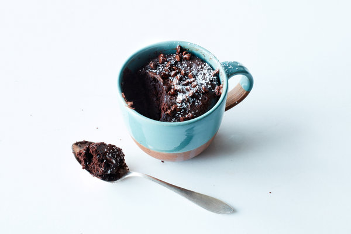

Chocolate Mug Cake

Description
If you Google "mug cake," you'll get more than 100 million results for the one-serving cake that's abked in a mug in the microwave.
Yet finding the right recipe - not too dense, not too sweet - is harder than one might hope.
This version, adapted from "Baking Class: 50 Fun Recipes Kids Will Love to Bake!" by Deanna F. Cook, is great, and requires just a few
pantry staples. For a molten chocolate mug cake, sprinkle the top with some mini chocolate chips before popping it into the
microwave, then remove it a few seconds early. This cute little cake may have been developed for children, but everyone loves it.
Ingredients
- 1 tbsp unsalted butter
- 1 egg
- A few drops vanilla extract
- 3 to 4 tbsp unsweetened cocoa powder
- A pinch of kosher salt
- Confectioners' sugar or vanilla ice cream (optional)
Steps
- Microwave the butter in a microwave-safe mug in 10-second increments until melted, 20 to 30 seconds.
Crack the egg into a small bowl; add the vanilla and whisk to combine using a small whisk or fork.
Pour the egg mixture into the mug over the butter and whisk to combine.
- Add the sugar, cocoa powder and salt and whisk until mostly smooth (a few lumps are OK).
Scrape down the sides the best you can with a spoon or a small silicone spatula.
Sprinkle with mini chocolate chips, if desired.
- Cook in the microwave on high for 1 to 1 1/2 minutes, or until a toothpick inserted in the center comes out mostly clean.
Sift a little confectioners' sugar on top or serve with a scoop of vanilla ice cream, if desired. Dig in with a spoon.